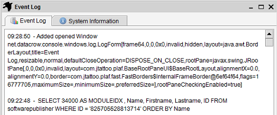
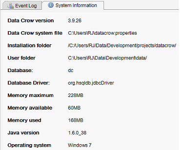

The Log
Menu path: File > Show Log
The log shows messages generated by Data Crow. This is normally not very interesting to look at (unless you are curious).
It is however a good place to look at in case of unexpected behaviour. The information found here is also written
to the log file. The log file is located in the user folder you selected when you initially installed Data Crow.
The file is called 'data_crow.log'.
Below you see a screen shot of the log. If you are really interested in all the events going on in Data Crow or
if you are debugging an error for example, you could start Data Crow with the -debug parameter to get the full brunt of
messages. This was explained here.

System Information
The System Information tab gives you an indication of the used memory and the directories in use.
